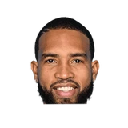

“In high school I was playing with Lonzo and Melo, and when I was in AAU, I was playing with the Mobley brothers, Evan Mobley and Isaiah Mobley. I've been playing with high-level talent for my whole life. So with that experience, I just know how to play with really good basketball players. I know how to make them better and they know how to make me better, and that's how we mesh on the court. That's why in AAU with the Mobleys, we were so successful. That's why in high school with Melo, we were so successful. We know how to play competitively and we know how to play the right way.”

What Onyeka Okongwu has said about other NBA players and coaches
5 quotes from Onyeka Okongwu about 5 other people around the NBA, newest first. Each one links to its original source.
Best quotes
Okongwu:
“Bam Adebayo. I hear it all the time and I see it. You know, Bam and I are very good defensive players. He's a great playmaker. I feel like in due time, I can be like him.”
Chase Hughes:Onyeka Okongwu:
“I just want to be a player like Bam [Adebayo]...I want to be a player like Bam is.”
What NBA players and coaches have said about Onyeka Okongwu →
Quotes per season
Onyeka Okongwu talks most about
 Onyeka Okongwu on Bam Adebayo2 quotes
Onyeka Okongwu on Bam Adebayo2 quotes Clint Capela1 quote
Clint Capela1 quote Evan Mobley1 quote
Evan Mobley1 quote
Isaiah Mobley1 quote LeBron James1 quote
LeBron James1 quote
2022-23
1 quoteOnyeka, on guarding LeBron:
“To me, he's the greatest of all time. Me and John being in foul trouble doesn't help, either. He's just a physical specimen going downhill. It's so hard sometimes; you have to foul him. He's a tough cover. We'll see him again a week from today.”
2021-22
1 quote“In high school I was playing with Lonzo and Melo, and when I was in AAU, I was playing with the Mobley brothers, Evan Mobley and Isaiah Mobley. I've been playing with high-level talent for my whole life. So with that experience, I just know how to play with really good basketball players. I know how to make them better and they know how to make me better, and that's how we mesh on the court. That's why in AAU with the Mobleys, we were so successful. That's why in high school with Melo, we were so successful. We know how to play competitively and we know how to play the right way.”
2020-21
3 quotesRookie Onyeka Okongwu on Clint Capela:
“Literally today, I asked Clint how he gets all those rebounds he gets. There's players who are taller than him, but he manages to snag 20 boards every other game. I told him, I'm amazed.”
Okongwu:
“Bam Adebayo. I hear it all the time and I see it. You know, Bam and I are very good defensive players. He's a great playmaker. I feel like in due time, I can be like him.”
Chase Hughes:Onyeka Okongwu:
“I just want to be a player like Bam [Adebayo]...I want to be a player like Bam is.”